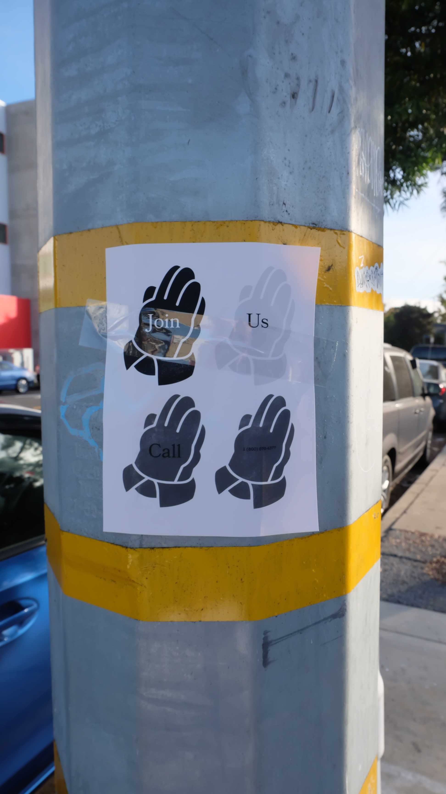

The Church of Ned Flanders
The church of Ned Flanders started after the episode "Alone Again, Natura-Diddily" from The Simpsons. This was the episode in which Ned sFlanders wife died. Fans of the show and die-hard fans of the character felt empathetic towards him and started to support him by coming together in small groups to pray for Ned. They truly believed that if humanity would change there believes and habits into something new, it will bring peace. They didn't understand that everyone is moving forward in this world, technology, knowledge... but that people still kept believing in something that has been a story for decades. They wanted to move on with something new, refreshing and innocent. All pointed to the future and beyond. Things got real serious and they started distributing pamphlets all over town and later over the world and searched for as many followers as possible in as many different cultures they could get. Soon there were a lot of people who believed in their predictions and tuned there back to there old beliefs and opened their arms for something refreshing. Ned Flanders would be the future of all of humanity and there was more hope for the people who were lost in there old beliefs. They thought he was their new god. There was no disrespect for the Catholics or other religions. They actually just tried to convince them to participate in their belief. But if they didn't then there was no problem. They started selling little statues of Mr. Flanders and prayed to Him. by selling these artifacts and the religiuos object they could save money to build real Ned Flanders Churches. They had the same purpose of organizing religious meetings and event and lectures. They needed to convince the government that this new religion was recognized as a real one and not just a silly prank. And that was working pretty good. But still, for a while, a lot of people thought this was a joke and made fun out of them. Still, the followers of ned believed in true peace so they did not react to all the bully and making fun out of them. they just kept on going with what they were doing. Making sure that this believes will convince a bigger audience and become a real big cult. This mentality made sure that there was no crime and law enforcement in this religion. No crime, just people who stand for their rights and are willing to do everything for that without hurting anyone. This religion arose in the west of America, soon it was commercialized to a real thing that grows to an international religion. In Europe, there were a couple of small secret groups that come together twice a week to pray to ned. Somehow Europe was less open to this new religion. These groups were mostly based in Sweden, Switzerland, Belgium and the Nederlands. Christmas was no longer the birthday of Jesus Christ but they celebrated Ned’s religious which is 17 December. There is also a bible with all the stories of Ned’s life in Springfield. Ned does not believe in insurance, he believes it is some form of gambling. The special thing about this Cult is that Ned is very religious and he believes in god and in the devil. But the supporters just believe in the character himself. He is a good person and comes up with himself and his faith. And that is the most obvious. The belief says that Ned Flanders spirit is an angel and that he is the example of a perfect human being. If you act like his behavior, only good things can happen to you. Everyone in this cult is even but still until the present it seems like there is a competition going on to be "the best Ned Flanders." Nowadays they are building churches all over the world that are meant for supporters from Ned Flanders. Supporters still kinda believe in God. Just in the other perspective. They consider God as a part of there believe but not as the main subject. Because if you want to be a good supporter of the church of Ned Flanders, the most important thing is to act like him as much as possible. The goverment recionize it as a real religion, as long as they keep respecting other religions and they are not allowed to go from door to door like the witness of jehova.
